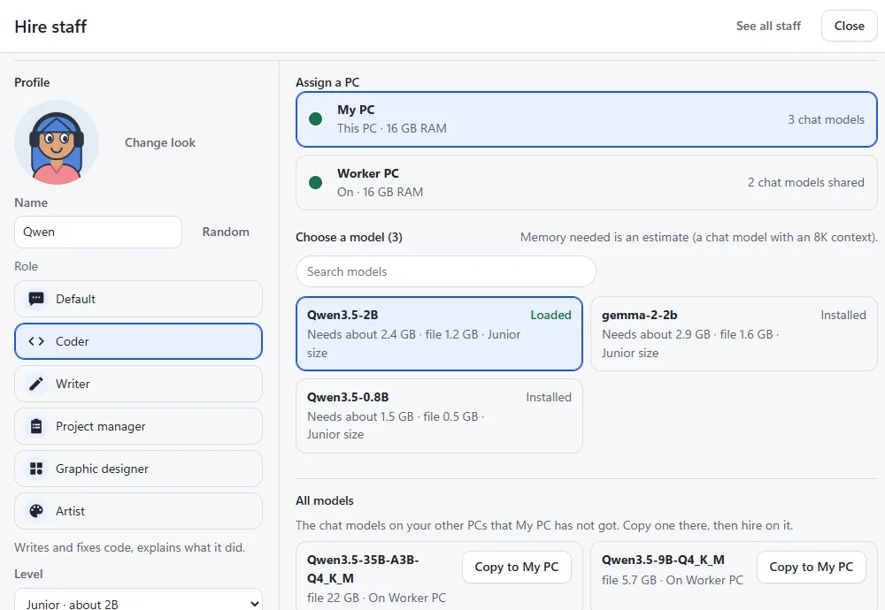

Hiring staff
A specialist, a model and a PC tied together; roles, levels and looks.
What a hire is
Everyone you talk to is someone you hire (the host, a separate assistant, is switched off for now: your old chats with it are kept to read). A hire ties three things together: the specialist (their role), the software (the model they think with) and the hardware (the PC that model runs on). Staff: hire and edit (in the left panel, or Hire staff under Settings) opens the Staff menu: Hire staff (type a name or roll the dice, then Create) or Manage staff (everyone, each with Edit). Hire staff is one page: their look, name, role and level on the left; on the right Assign a PC, then Choose a model: the models on that PC as cards (Add new, beside its search, opens Models: add or remove), each with the memory it needs (a card says when a model is a tight fit or needs more memory than is free).

Role, level and models
- The role: Default, Coder, Writer, Project manager, Graphic designer or Artist. Default is the model as it is, with nothing of ours sent (no instructions, no memory, the model's own settings), as in a plain chat window. An artist or a graphic designer draws with a picture model.
- The level (junior to senior) follows the size of the model they use: there is nothing to pick. Their name comes from the model (Qwen, Gemma…) unless you type one.
- All models, under Choose a model: the models (of the role's kind) on this PC and the linked PCs that the PC picked has not got, each with "On <PCs>" and Copy to <PC> (from one linked PC to another it goes through this PC). When the copy is done the model is in that PC's list and picked. Push to node on a card opens a window of every PC on the list: press Push on any of them (a PC that has it says so).
- Later: give each a first choice model and a fallback under Edit Staff (the pencil beside them). Firing someone (Staff, Edit, Fire) opens the office on them: the boss walks in, they pack a box and leave by the front door.
Look
Look (Change look in Hire staff, and under Edit Staff) draws each hire as a little person: gender, skin, hair, hair colour, top, glasses, facial hair and headwear. It is their round picture wherever they have no profile photo (a photo, when set, still shows instead), and how the office draws them. Press a person in the left panel to talk to them. An artist's chat draws what you type there, exactly as typed; a picture asked for in any other chat is pointed to the artist. The chat shows the model of the chat open now; every model loaded is in the top bar.
See also the office, moving staff to another PC and chats and saving your work.